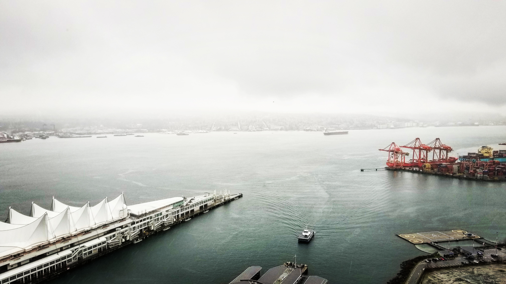

-
Toronto
X
Toronto
Toronto, the capital of the province of Ontario, is a major Canadian city along Lake Ontario’s northwestern shore. It's a dynamic metropolis with a core of soaring skyscrapers, all dwarfed by the iconic, free-standing CN Tower. Toronto also has many green spaces, from the orderly oval of Queen’s Park to 400-acre High Park and its trails, sports facilities and zoo.
-
Tokyo
X
Tokyo
Tokyo, Japan’s busy capital, mixes the ultramodern and the traditional, from neon-lit skyscrapers to historic temples. The opulent Meiji Shinto Shrine is known for its towering gate and surrounding woods. The Imperial Palace sits amid large public gardens. The city's many museums offer exhibits ranging from classical art (in the Tokyo National Museum) to a reconstructed kabuki theater (in the Edo-Tokyo Museum).
-
Shanghai

-
Chicago
-
Vancouver

-
Seoul